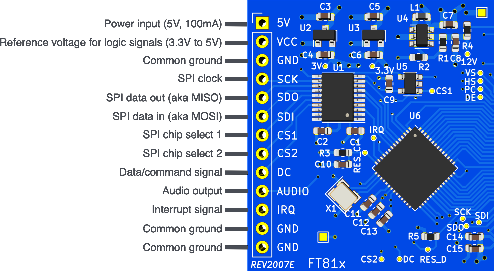

The hardware is open source which allows you to download the Gerber files and KiCad files and have the board produced by a manufacturer of your choosing. You'll also need this compatible display.
Alternatively you can just:
Buy the Board and Display HereIn order to install the FT81x Arduino Driver using the official Arduino IDE, you first need to download a .zip file of the library.
After that, follow this guide for installing .zip libraries.
Download .zip LibraryThe library is available on the official PlatformIO registry. To install it, just type into your shell:
pio lib install FT81x_Arduino_Driver
Please refer to the following pin description when hooking up
the board to your microcontroller:

The table below prodives a more detailed description for each pin.
| # | Name | Description | Required |
|---|---|---|---|
| 1 | 5V | 5V power input for powering the the board, the display and the backlight LED. Hook this up to the 5V power outlet of your Arduino board. Requires at least 100mA of current. | |
| 2 | VCC | Reference voltage for all digital signal lines. For 3.3V microcontrollers, hook this up to the 3.3V power outlet of the Arduino board. For 5V microcontrollers, hook this up to the 5V power outlet. | |
| 3 | GND | Needs to be connected to a common ground with the Arduino board. | |
| 4 | SCK | Clock signal for the SPI bus. Hook this up to the SPI clock of your Arduino board. | |
| 5 | SDO | Serial data out of the board. Hook this up to the serial data in signal of your Arduino board (aka MISO). | |
| 6 | SDI | Serial data in of the board. Hook this up to the serial data out signal of your Arduino board (aka MOSI). | |
| 7 | CS1 | Chip select signal for communication with the FT81x IC on the board. It's recommended to hook this up to the default CS pin of your Arduino board. However, any GPIO pin can be configured as CS1 signal. | |
| 8 | CS2 | Chip select signal for communication with the integrated controller IC of the display. Any GPIO pin can be configured as CS2 signal. | |
| 9 | DC | Data/command signal for communication with the integrated controller IC of the display. Any GPIO pin can be configured as DC signal. | |
| 10 | AUDIO | The FT81x is capable of sound synthesis and mono audio playback. This pin is directly connected to the raw audio output of the IC. It's recommended to use additional filter and amplification circuitry for proper audio applications. | |
| 11 | IRQ | Interrupt signal for different applications (e.g. audio playback). As of now, this signal line isn't used by the Arduino library. | |
| 12 | GND | An additional common ground. It's only required that one of the GND signals is connected. | |
| 13 | GND | An additional common ground. It's only required that one of the GND signals is connected. |
Please refer to the table below for specific information on how to hook up the display driver board to common Arduino boards.
| Name | Arduino Uno | Arduino Nano | NodeMCU-32S | Teensy 4.0 |
|---|---|---|---|---|
| 5V | 5V | 5V | 5V / VIN | VIN (5V) |
| VCC | 5V | 5V | 3V3 | 3V |
| GND | GND | GND | GND | GND |
| SCK | 13 | D13 | GPIO18 | 13 |
| SDO | 12 | D12 | GPIO19 | 12 |
| SDI | 11 | D11 | GPIO23 | 11 |
| CS1 | 10* | D10* | GPIO5* | 10* |
| CS2 | 9* | D9* | GPIO17* | 9* |
| DC | 8* | D8* | GPIO16* | 8* |
* configurable
After you successfully installed the Arduino library and hooked up your board, create a new Arduino Sketch and enter the following source code. Be sure to use the correct pin numbers for the CS1, CS2 and DC pins on line 3.
#include "FT81x.h"
FT81x ft81x = FT81x(10, 9, 8);
void setup() {
SPI.begin();
ft81x.begin();
ft81x.beginDisplayList();
ft81x.clear(FT81x_COLOR_RGB(0, 0, 0));
ft81x.drawText(240, 200, 31, FT81x_COLOR_RGB(255, 255, 255), FT81x_OPT_CENTER, "Hello World\0");
ft81x.swapScreen();
}After compiling and uploading to the mictocontroller, you should see the text Hello World at the center of your display.
Refer to the various example sketches as well as the API documentation for more information.
If you have any issues and you already double checked all the connections and the code contact the seller or open an issue on GitHub.